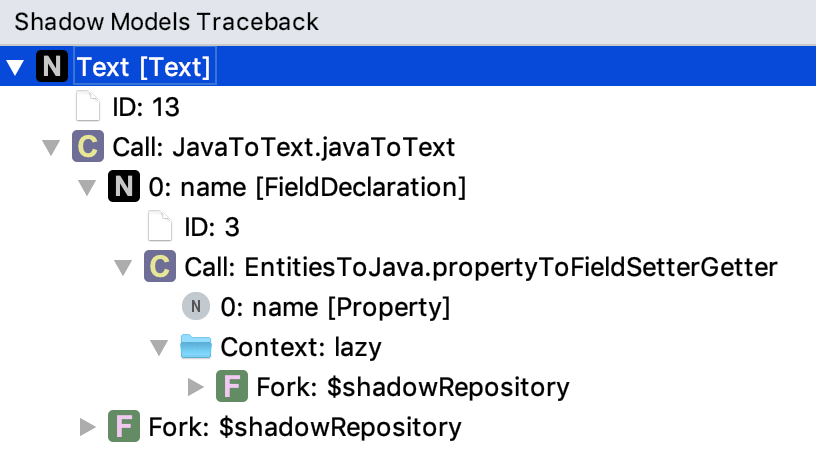

Shadow Models¶
Language Namespace : de.q60.mps.shadowmodels
A shadow model is a non-editable model derived from existing models by model-to-model transformations. It’s incrementally maintained while editing the input model.
A special language describes the transformations, designed to support incremental updates of the output model. Dynamic dependency tracking is used during the executing of the transformations which remove the need for a declarative language. Base Language expressions with all its extensions are supported inside the transformation rules.
Examples¶
There’s a separate Shadow Models (Examples) plugin that contains some example languages and transformation
implementations to show you how to build your own shadow models.
The languages and input models can be found in the namespace de.q60.mps.shadowmodels.examples.
The transformations are implemented in the transformation aspect.
Transformations¶
The transformation language is similar to the MPS generator language. It has transformation rules with a left side that describes the input it applies to and a right side that creates the output.
The right side is similar to light quotations instead of using the concrete syntax of the target language.
Repository Meta Model¶
When you implement transformations there’s an important difference when working with modules and models.
In the world of shadow models there’s only one root node concept Repository.
Modules and models are descendants of this single root node.
What in MPS is a root node is here just a child of a node of concept Model.
When you ask a root node for its parent, you get the Model node.
This has the advantage that you can define transformations on modules and models in the same way as on any other node. You can query them using the more convenient smodel language instead of the Java API.
You have to keep in mind that asking a node for its root node always returns the repository.
If you need to know the model of a node, you have to write node.ancestor<Model> instead.
node.getModel() always returns null.
You can find the whole meta model in the language de.q60.mps.shadowmodels.runtimelang.
Here is a summary of it:
Shadow Repository¶
You can make the output of your transformations appear in the project explorer as shown in the image below.

By default, this is disabled.
You can activate it by choosing Tools > Activate Shadow Repository in the main menu.
To add your own output, you have to define a transformation that contributes to the predefined transformation
ShadowRepository.Repository in the transformations aspect of the language de.q60.mps.shadowmodels.repository.
Here is an example that you can find in the language de.q60.mps.shadowmodels.examples.statemachine:
It’s important to know that the whole shadow repository is executed inside a fork. This makes sure that references are updated to point to nodes inside the shadow repository. You can, of course, create additional sub forks.
Forks¶
Shadow models allow you to write transformations in two different styles. You can write them like functions and call everything explicitly, or you can use forks. Forks basically allow you to write transformations similar to how you would do it in the MPS generator.
In MPS, the unit of transformation is a model. You can’t generate a single class (in case of baseLanguage code) inside a model, and you can’t generate classes from different models together. Shadow model forks can have any node as the root of the fork. If you decide to make a model the root of your fork, then you have the equivalent to MPS. But often the single root nodes inside the model are a better choice for the fork root. In case of baseLanguage classes, there’s no difference if two classes are in the same or in different models.
Forks also have support for mapping labels as you know them from MPS. They can only work if the map is filled before mappings are queried from them. Forks execute all transformations (which fill the map) before any reference is resolved (which queries mapping). As in MPS where mapping labels only work inside the same model, here they only work inside the same fork.
Luckily, both have a solution for that. MPS introduced cross model generation where you define special checkpoints inside the generation plan. In shadow models you can define fork dependencies. If a transformation or mapping can’t be found in the same fork, they are searched in all forks that are defined as a dependency. You can add dependencies in the upper part of any transformation that’s part of the fork.
As all transformations, forks are executed on demand. You don’t have to take care of generating your models in the correct order. If you define a fork dependency, the transformation engine makes sure that the target fork exists when it’s needed.
A fork can specify a list of transformations that are automatically applied to the input,
just like reduction rules in MPS.
By default, there’s only one attempt to apply transformations on all nodes that you copy using the transform keyword.
If there are nodes in the output where one of the transformations was applicable, nothing would happen unless
you enable the fixpoint mode.
Then the fork is applied again on the output of the previous execution.
For performance reasons, a fork is by default not in fixpoint mode.
The identity of a fork is composed of the fork name and the parameter values of the fork call. You can use this to create multiple copies of the same input node. Just add an extra (string) parameter to the fork and use a different value for each copy. The fork identity is part of the node identity of all its output nodes.
Reference Resolution¶
Differences for Forks¶
All transformations inside a fork are executed before any reference resolution happens. You will get an exception when the reference target was not created in this first phase. If you are not inside a fork, there aren’t these two phases. Transformations are executed independent of whether you access it through a parent-child relation or a reference. You won’t get an exception in this case.
Identity of a Node¶
A node in the output is identified by the transformation name and the parameter values of the transformation call. If you call a fork then the identity of the fork (fork name + parameter values) will be part of all it’s output nodes.
For references, it’s often enough to specify the transformation call that creates the target. It will then be resolved in the same fork, its dependencies or the parent fork. If you need to, you can also specify the exact fork of the reference target.
References to Non-Shadow Nodes¶
If you want to generate code against an existing runtime library,
you can just write a baseLanguage expression that returns an SNode or SNodeReference
to set a reference to a fixed target.
No resolution will happen in this case.
In the statemachines example, you can find the following transformation:
Traceback¶
For debugging the output in the shadow repository, you show the transformations that produced a given output node. Right-click on an output node and choose Language Debug > Shadow Models: Traceback from the context menu.

Reduction rules and generation plans¶
There are some use cases that are easier to implement with the MPS generator language than with the explicit transformation calls of the shadow models language. That’s why there are now similar abstractions in the shadow models language.
Mappings Cnfigurations and Goals¶
A mapping configuration in MPS is a container for reduction/weaving/… rules. You can define rules to specify the order in which the mappings configuration are applied on the input model.
In shadow models there’s now also a “mapping configuration” concept. You can specify reduction and weaving rules inside of it. The following example shows a concept that doesn’t exist in MPS: goals.
A goal specifies what should happen with the input model. All mapping configurations that contribute to the same goal are applied when the goal is called on some input. While in MPS you always execute the same generators on a model, goals enable you to produce multiple outputs by executing different goals on the same input.
Generation plans¶
When you invoke a goal all mapping configurations that contribute to that goal are collected and sorted into a generation plan. A generation plan is dynamically computed from a set of rules. The rules are the same as known from MPS. A before/after rule will separate the generation into two steps where the output of the first is the input of the second one.
Reduction Rules¶
Reduction rules are automatically applied to any applicable node on the input including its descendants. Rules are repeatedly applied on the output up to 10 times. If rules are then still applicable, the generation fails.
Conflicting reduction rules don’t cause the generation to fail. They behave in the same way as in the MPS generator. The first applicable rule is used. If they are part of the same mapping configuration, the order of the rules is relevant. If they are part of different mappings configurations, it’s undefined which rule is used.
Weaving Rules¶
Weaving rules are used to insert an additional node as a child into an output node. The target node is specified in the same way as in references, but it has to be part of the output of the current goal execution.
Weaving rules are applied only on the initial input or on output nodes of a transformation. If a node was copied without any change between sub steps, weaving rules aren’t applied. This prevents them from being reapplied on the same node again and again.
Property Rules¶
Property rules can change a value without doing any structural change to the model. They are applied on the output after executing reduction and weaving rules.
Reference Rules¶
Reference rules are the same as property rules except that they change a reference target instead of a property value. The target is resolved in the scope of the output node.
Scopes¶
Scopes can be used to resolve conflicts during reference resolution. If the same node is copied multiple times into the output and you want to reference one of them, you can put the source and the target node into the same scope.